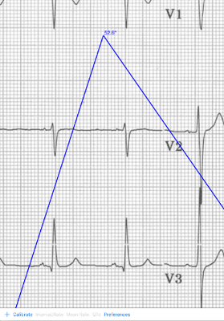
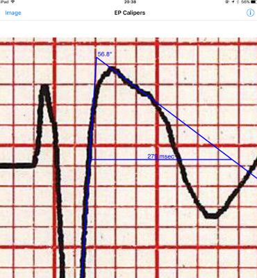

Table of Contents
- You're on call, again…
- Electronic calipers
- What's new?
- Quick start
- Loading an image
- Adjusting the image
- Exiting Image mode
- Types of calipers
- Moving calipers
- Making measurements
- Adding and deleting calipers
- Selecting a caliper
- Calibration
- Changing calibration
- Interval/Rate
- Mean rate and interval calculation
- QTc calculation
- Brugadometer
- Preferences
- Issues and limitations
- Acknowledgments
You're on call, again…
It's 2 AM and the phone rings. It's a nurse on the cardiac unit. Mr. Smith is due to get his antiarrhythmic drug (who comes up with these crazy drug schedules?) and his ECG has a borderline prolonged QTc interval, at least according to the computer. She's not sure if it is safe to give the drug. The nurse wants to send you the ECG.
You open the ECG on your phone. You look at the QT interval. You're not sure about the computer's measurement. You really should double check it. You start counting little boxes. You pull out the (t)rusty old pair of mechanical calipers some drug rep gave you many years ago, back when such largesse was still legal. You think to yourself: I live in a digital age. Am I really making measurements on my iPhone with a physical pair of calipers?
Electronic calipers
EP Calipers provides electronic calipers for measuring intervals on images of electrocardiograms (ECGs) or electrophysiologic recordings. In the electrophysiology lab electronic calipers are included as part of the recording system. EP Calipers is intended to provide similar electronic calipers for use on your iPhone or iPad. The electronic calipers of EP Calipers are more accurate, easier to use, and less dangerous than mechanical calipers (they don't have sharp points!).
What's new?
This new version of EP Calipers contains new angle measurement calipers and a Brugadometer.
Quick start
When EP Calipers starts, a sample ECG and a time caliper are loaded. Move the caliper around by touching the caliper's cross-bar and dragging it with your finger. Expand and contract the caliper by putting your finger on either vertical bar and dragging. Pinch and zoom the underlying ECG image as needed to enlarge or shrink it. If the ECG is bigger than your screen, you can drag the image around with your finger to choose a place to measure. The remainder of these instructions will go over how to load ECG images, add and delete calipers, calibrate the calipers and make advanced measurements like the corrected QT interval.
Loading an image

Figure 1: Image button
Use the Image button at the top left of the screen to show the Image menu at the bottom of your screen.

Figure 2: Image menu
With this menu you can load and adjust an ECG image. There are several ways to load an ECG image.
Take a photo of an ECG
 Touch the Camera button to take a photo of an
ECG tracing and load it into the app. Note that images captured this
way are not saved in the photos collection of the device. It's best to use this option to make a quick measurement when you don't need to save the image.
Touch the Camera button to take a photo of an
ECG tracing and load it into the app. Note that images captured this
way are not saved in the photos collection of the device. It's best to use this option to make a quick measurement when you don't need to save the image.
Select a photo from your photos collection
Touch Select to chose an image that is already saved on your device in your photos collection (for example, an image file attached to an email that you saved or a photo that your previously took).
Select a photo or PDF using the Share menu from other apps
EP Calipers can open image and PDF files regardless of where they are located on your device. You can directly open email attachments, iCloud, Google Drive, and Dropbox files. It is also easy to open ECG images directly from the AliveCor Kardia™ app. The key to opening images in external apps is to use the Share button. It looks like this: 
Depending on the app, this button may appear at the top of the screen, or it may be necessary to do a long press on an image to open the Share menu. Here you can see the Share button at the top right of the Kardia screen:

Figure 3: Share button at top right
Once the Share menu is open, one of the options should be Copy to EP Calipers. Selecting this option will open the image in the app.

Figure 4: Copy to EP Calipers will open the image in EP Calipers
If the Copy to EP Calipers option does not appear, then try the Quick Look button:

Figure 5: The Quick Look button is at the lower right
or the Open In… button. Selecting it should open a window where Copy to EP Calipers appears.

Figure 6: The Open In… button allows the image to be opened in EP Calipers
Opening email attachments or Dropbox files
For email attachments or Dropbox files, download the attachment or the file (the details depend on the email app you are using. Then when viewing the attachment or file, tap or long press to make the Share button appear. Select Share and then select Copy to EP Calipers to open the image or PDF in the app.
AliveCor
To view ECGs in the AliveCor Kardia app, select Journal, then SHARE for the specific saved ECG you want to view.

Figure 7: The Kardia SHARE button uses an envelope icon
After selecting the Share button, select PDF from the options that appear. Then select the Share button at the top right of the screen. Select Copy to EP Calipers and you are ready to measure!
Multiple page PDFs
When PDF files have more than one page, the app will display the first page initially. You can go to other pages by selecting Previous or Next in the Image menu.
Adjusting the image
You can adjust the positioning of the image using pinch-to-zoom gestures and finger scrolling. Use the Adjust menu to rotate or flip your image. This is useful if the image is rotated or not quite square to the screen. You can rotate the image by 90° in either direction, or by increments of 1°. If you select the More menu you can fine-tune the image further, rotating it by as little as 0.1° or flipping the image if for some reason it's reversed (flipping ECGs can be a fun pastime in its own right). Return from the More menu back to the Adjust menu by selecting Done. Using these various options you should be able to straighten the image so it is square to the calipers. You should recalibrate your calipers after rotating the image. If you need to go back to the original position and zoom setting use Reset. After adjusting the image select Done to return to the main image menu.

Figure 8: The Adjust menu
Figure 9: The More menu
Exiting Image mode
After loading and adjusting the image, you need to exit Image mode so that you can use the calipers. Select the Measure button at the top left of the screen to return to the EP Calipers main screen.

Figure 10: Use the Measure button to exit Image mode
Types of calipers
Calipers can be horizontal for time measurements, vertical for amplitude measurements or angle shaped to measure angles in degrees. Time calipers look like the letter H, amplitude calipers like an H lying on its side, and angle calipers start out looking like an upside down V.
Moving calipers
Time and amplitude calipers
Drag the crossbar of a caliper to move it as a unit. Drag the left or right bars (or top or bottom in the case of amplitude calipers) to stretch or shrink the calipers. Note that you cannot pinch both bars at the same time.

Figure 11: Single unselected uncalibrated time caliper
Angle calipers
Angle calipers are moved as a unit by dragging at the apex or just above the apex of the angle. The apex is where the two lines join together. Dragging either bar of an angle caliper a little distance away from the apex will open or close the angle.

Figure 12: Angle caliper
Making measurements
The interval measured by time or amplitude calipers is displayed on top of or next to the crossbar of the caliper. Until these calipers are calibrated, measurements are displayed in arbitrary units (points, roughly equivalent to screen pixels). Angle calipers show a measurement of the current angle in degrees and do not need to be calibrated to display angles.
Adding and deleting calipers
Select + to add new calipers.
Figure 13: Main menu
Select Time, Amplitude, or Angle to add the type of caliper you want. Double-tap a caliper to delete it.

Figure 14: Add caliper menu
Selecting a caliper
When more than one caliper is present, it is necessary that one is selected to be the active caliper when calibrating or making calculated measurements. By default an unselected caliper is blue and a selected caliper is red (You can change these colors if you want). Single tapping an unselected caliper will select it. Tap it again (but not too fast, as a double tap deletes the caliper) to unselect it. As there can be only one selected caliper at a time, selecting a caliper will unselect any other caliper that happens to be selected. In some cases a caliper will be selected automatically (for example to do calibration) if you have not already selected one. If you want to select a different caliper, just tap another.

Figure 15: Two uncalibrated calipers, a time and amplitude. The time caliper is selected.
Calibration
Select Cal or Calibration. Stretch the selected caliper over a known interval (such as 1000 msec for time, or 10 mm for amplitude calipers). Select Set. In the dialog box, make sure the interval matches what you are measuring. Enter both the calibration interval and units (e.g. 500 msec, or 1 sec, or 1 mV). Select Set in the dialog box to set the calibration. Note that time and amplitude calipers need to be calibrated separately. Once calibrated, calipers will show intervals in the units used to calibrate. Newly created calipers will use the same calibration.

Figure 16: Time caliper about to be calibrated

Figure 17: Calibrated time caliper
Angle calipers do not need to be calibrated. However, after calibration of time and amplitude calipers, angle calipers can be used as a Brugadometer.
Changing calibration
You can recalibrate at any time. You can clear all calibration by selecting Clear in the calibration toolbar. Note that calibration is maintained if the device is rotated or the image is zoomed. Selecting a new image will reset calibration.
Interval/Rate
Once a time (horizontal) caliper is calibrated, provided you use time units (such as msec or sec) for the calibration, it is possible to toggle between interval measurements (e.g. 600 msec) and heart rate measurements (e.g. 100 bpm) by selecting Interval/Rate on iPads (or I/R on iPhones).
Mean rate and interval calculation
Select a calibrated caliper and stretch it over a number of intervals. Select Mean Rate or MRate and enter the number of intervals measured. A dialog box will show the calculated mean heart rate and interval. This is useful for calculating rates and intervals in irregular rhythms, such as atrial fibrillation.
QTc calculation
Select QTc. Stretch the selected caliper over one or more RR intervals and select Measure. Enter the number of intervals the caliper is stretched over and select Continue. Then use the same caliper to measure the QT interval. Select Measure. A dialog box will give the calculated QTc using Bazett's formula.

Figure 18: QTc measurement first step: measure 1 or more RR intervals

Figure 19: QTc measurement second step: measure the QT interval

Figure 20: QTc result
Brugadometer
The Brugadometer is a diagnostic tool for Brugada syndrome developed in collaboration with Dr. Adrian Baranchuk and his colleagues at Queen's University Kingston, Ontario, Canada. It is a tool intended to distinguish between ECGs with a Brugada syndrome pattern in leads V1 or V2 and ECGs with incomplete right bundle branch block. This tool is under development in EP Calipers and will likely evolve in future updates. In order to use the Brugadometer, it is necessary to calibrate an amplitude caliper in millimeters (mm) and to calibrate a time caliper preferably in msec or mm. After doing so, an angle caliper will appear to have a triangle at its apex as shown below.

Figure 21: Brugadometer showing triangle base 5 mm below apex of caliper
The triangle base will be located 5 mm below the apex of the triangle. Proper alignment of this triangle with an r' wave in a person with a suspected Brugada ECG will provide measurement of the so-called beta angle and the triangle base. A triangle base > 160 msec (4 mm at standard ECG recording speed of 25 mm/sec) has an increased probability of being a Brugada ECG. Please see de Luna AB, Garcia-Niebla J, Baranchuk A. New electrocardiographic features in Brugada syndrome. Curr Cardiol Rev. 2014 Aug; 10(3): 175-180 for further information.
Preferences
Preferences such as caliper colors and default calibration intervals can be selected in the Settings app of your device under EP Calipers. You can also change preferences by selecting the Preferences or Prefs item on the main menu of the app. After changing the preferences return to the app by selecting the back button at the top left of the Settings screen. With some preferences it is necessary to close the EP Calipers app before they take effect. Close the app by double pressing the Home button and then swipe the app away in the app switching screen. Restart the app and the new settings will take effect.
Issues and limitations
- Because of the limited nature of iOS multitasking, switching between this app and other apps may result in the image being reset to the default ECG image. This may require reloading the image. Be certain that the ECG you are measuring is indeed the one you selected and not the default normal ECG!
- Images taken via the Camera button in the app are not saved to your photos. Using the camera in the app is recommended for quick ECG analysis when you don't need to retain an image of the ECG long-term.
- Rotation of the device will not preserve the relation between the ECG image and the calipers. However calibration is preserved with rotation.
- It is highly recommended that calipers be recalibrated if the image (not the device) is rotated. The app though does not enforce this.
Acknowledgments
- Thanks to Dr. Michael Katz for the concept.
- Thanks to Dr. Adrian Baranchuk and his colleagues at Queen's University Kingston, Ontario, Canada for the concept of the Brugadometer and for assistance in implementing this algorithm.
- The source code for EP Calipers is available on GitHub.
- EP Calipers is open source software and is licensed under the Apache License Version 2.0. No guarantees are made as to the accuracy of the app, so use at your own risk.
- For questions, error reporting or suggestions contact mannd@epstudiossoftware.com
- Website: https://www.epstudiossoftware.com